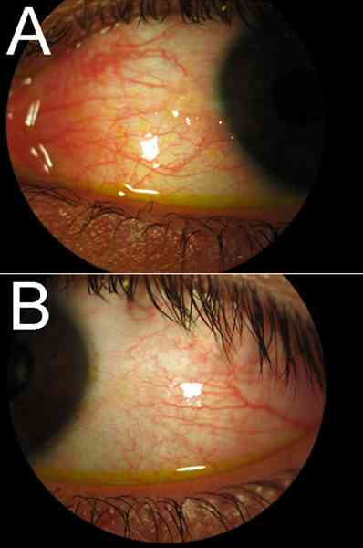
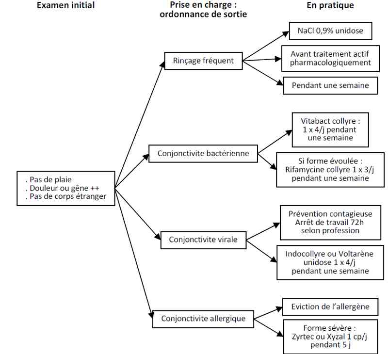

Bienvenue Sur Medical Education
Conjonctivites
Spécialité : ophtalmologie /
Points importants
-
Trois types de conjonctivites :
-
virale (contagieuse++) : CV, la plus fréquente
-
bactérienne (antibiotique) : CB, la moins fréquente
-
allergique (éviction de l'allergène si possible) : CA
-
Importance des diagnostics différentiels à éliminer (terrain, contage)
Présentation clinique / CIMU
SIGNES FONCTIONNELS
- virale (contagieuse++) : CV, la plus fréquente
- bactérienne (antibiotique) : CB, la moins fréquente
- allergique (éviction de l'allergène si possible) : CA
Présentation clinique / CIMU
SIGNES FONCTIONNELS
Généraux
- Syndrome pseudo-grippal associé, adénopathie prétragienne (CV)
- Manifestations atopiques (CA)
Spécifiques
- Œil hyperhémié avec dilatation des vaisseaux conjonctivaux
- Œil non douloureux, sensation de CE (comme grains de sable)
- Larmoiement clair (CV, CA) ou purulent (CB)
- Secrétions conjonctivales purulentes (CB)
- Chémosis (oedème conjonctival) (CV, CA)
- Œdème palpébral associé CA++, (CV)
- Paupières collées (par les sécrétions conjonctivales séchées)
- Début unilatéral, se bilatéralisant secondairement (CV, CB)
- Pas de baisse d'acuité visuelle
CONTEXTE
Terrain
- Atopie, immunodéprimé
Antécédents
- Asthme
Circonstances de survenue
- Episode pseudo-grippal ORL associé (CV)
- Atopie, nouveau cosmétique, manipulation de produit toxique (CA)
- Faible défenses immunitaires, inoculat accidentel (CB)
EXAMEN CLINIQUE
Examen de la surface oculaire
- Recherche de corps étranger (retourner la paupière supérieure)
- Hyperhémie conjonctivale
 _29 Photo Conjonctivite
- Sécrétions conjonctivales
Examen de la sphère ORL (CV)
EXAMENS PARACLINIQUES SIMPLES
- Frottis conjonctival à visée bactériologique (CB)
CIMU
- Tri 5
Diagnostic étiologique
-
Trois grandes catégories de conjonctivites :
-
bactérienne (CB)
-
virale (CV)
-
allergique (CA)
Diagnostic différentiel
-
Uvéite
-
Corps étranger intracornéen ou de surface oculaire
-
Œil rouge douloureux
-
Traumatisme oculaire
-
Hémorragie sous conjonctivale
Traitement
TRAITEMENT HOSPITALIER
-
Aucun aux urgences, éviction de la promiscuité publique (contagiosité)
-
Cf. : ordonnance de sortie
MEDICAMENTS
-
Cf. ordonnance de sortie
-
Dans les CB, les antibiotiques abrègent l'épisode mais ne sont pas plus efficaces que placébo à J8 (hors CB à Chlamidiae trachomatis, contexte = pays en voie de développement, Afrique)
Devenir / orientation
CRITERES DE SORTIE
-
Systématique
ORDONNANCE DE SORTIE
- bactérienne (CB)
- virale (CV)
- allergique (CA)
Diagnostic différentiel
- Uvéite
- Corps étranger intracornéen ou de surface oculaire
- Œil rouge douloureux
- Traumatisme oculaire
- Hémorragie sous conjonctivale
Traitement
TRAITEMENT HOSPITALIER
-
Aucun aux urgences, éviction de la promiscuité publique (contagiosité)
-
Cf. : ordonnance de sortie
MEDICAMENTS
-
Cf. ordonnance de sortie
-
Dans les CB, les antibiotiques abrègent l'épisode mais ne sont pas plus efficaces que placébo à J8 (hors CB à Chlamidiae trachomatis, contexte = pays en voie de développement, Afrique)
Devenir / orientation
CRITERES DE SORTIE
-
Systématique
ORDONNANCE DE SORTIE
Devenir / orientation
CRITERES DE SORTIE
- Systématique
ORDONNANCE DE SORTIE
Bien rincer l'oeil au NaCl 0,9% unidose (avant tout autre traitement)
CB
- Picloxydine (Vitabact® collyre) : une instillation x 4/j, pendant une semaine
- Rifamycine collyre (formes évoluées): une instillation x 3/j, pendant une semaine
CV
- Indométacine (Indocollyre® unidose) 0,1%
- Alternative : diclofénac (Voltarène® unidose 0,1%), kétorolac (Acular® 0,5%)
- Une instillation x 3/j, pendant une semaine
- Si pas de contre-indication aux AINS
CA
- Eviction de l'allergène
- Formes sévères : lévocétirizine (Xyzal®) 1cp le soir pendant cinq jours
- Alternative : cétirizine (Zyrtec®) 1cp le soir pendant cinq jours
RECOMMANDATIONS DE SORTIE
-
Consulter un ophtalmologiste si :
- persistance après 7 jours de traitement
- survenue d'une baisse d'acuité visuelle ou de vraies douleurs
- Eviter les cosmétiques et le port de lentille de contact pendant la phase aiguë
-
Mesures de prévention anti-contagion (CB, CV) :
- ne pas embrasser, ne pas serrer de main,
-
arrêt de travail les trois premiers jours de traitement si contacts publics en milieu confiné (ex : bureau)
Mécanisme / description
-
La conjonctive est la muqueuse qui recouvre la sclère antérieure et les faces internes palpébrales supérieures et inférieures ; elle ne recouvre pas la cornée
-
Les cellules immunocompétentes et les vaisseaux de la conjonctive sont très réactifs aux stimuli
-
La conjonctivite est une inflammation aspécifique de la conjonctive sans atteinte cornéenne, secondaire à une étiologie toxique/allergique ou infectieuse
Algorithme
-
Algorithme : conjonctivite
Algorithme
- Algorithme : conjonctivite
 _30 Algorithme Algorithme : conjonctivite
Bibliographie
-
Creuzot-Garcher C. Les différentes formes cliniques de l'allergie conjonctivale. J Fr Ophtalmol. 2007 Mar;30(3):288-91
-
Fardeau C. Conjonctivites infectieuses virales. Traité EMC Ophtalmologie [21-130-D-10], Eds Elsevier-Masson
-
Adenis JP, Salomon JL, Saint-Blancat P. Conjonctivites bactériennes. Traité EMC Ophtalmologie [21-130-B-20], Eds Elsevier-Masson
Auteur(s) : Jean-Louis BOURGES